9.2.1 Bitnami Wordpress 이미지로 인스턴스 만들기
Cloud Market 상의 Bitnami 이미지 사용방법을 알고자 그중에서 많이 사용하는 WordPress 이미지로 Compute Instance를 만들어 보도로 하겠습니다.
참고 사이트
“Get Started with Bitnami Applications on Oracle Cloud Infrastructure “, Bitnami Documentation(웹), 2019년 1월 12일, https://docs.bitnami.com/oci/get-started-oci/
Oracle Cloud Market에서 Bitnami WordPress 이미지 찾기
Cloud Market의 검색 필드에서 bitnami wordpress로 검색합니다. 첫줄에 있는 WordPress Certified by Bitnami를 클릭합니다.
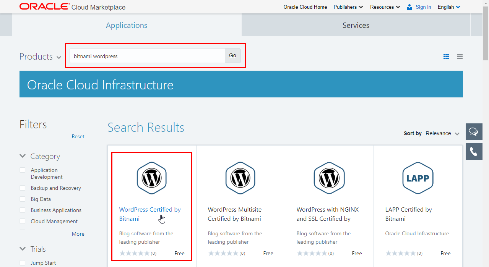WordPress Certified by Bitnami 상세 페이지에서 오른쪽 위의 Get App을 클릭합니다.
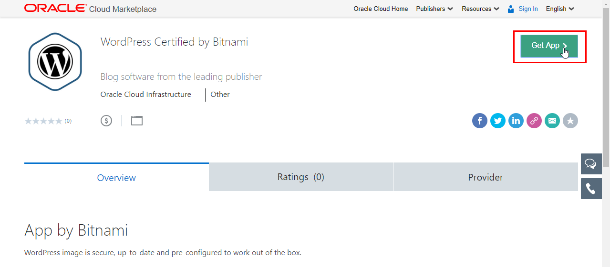Oracle Cloud Market Terms of Use 내용을 확인 후 Next 클릭
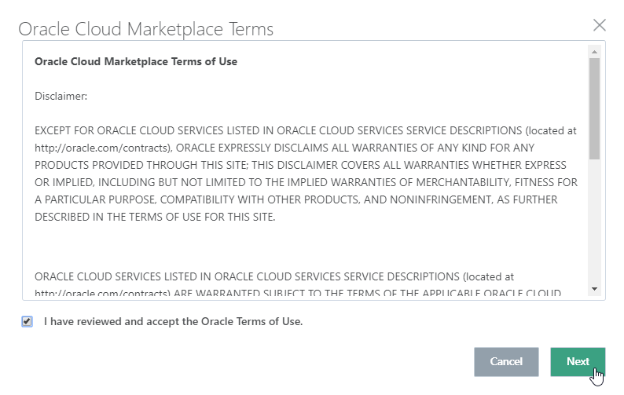여러 가지 배포방식을 제공하고 있습니다. 그중에서 Oracle Cloud에서 사용 가능한 Single-Tier를 사용합니다. 설명이 보이며 이미지가 있는 Object Storage URL이 보입니다. 복사해 둡니다.
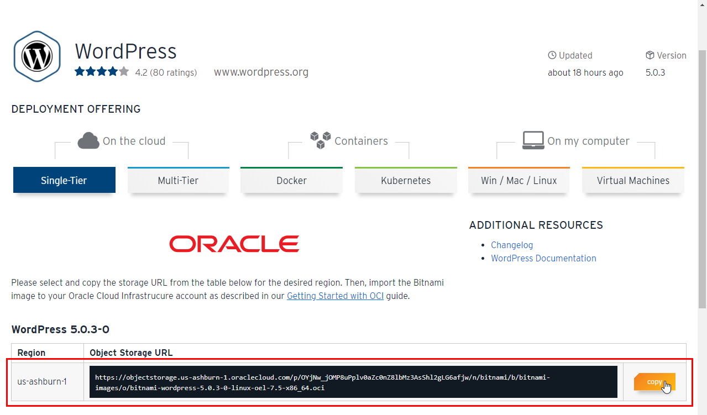설치 및 로그인시 필요한 정보는 아래쪽에 그림과 같이 있습니다. 해당 정보를 이용하여 이후 접속합니다.
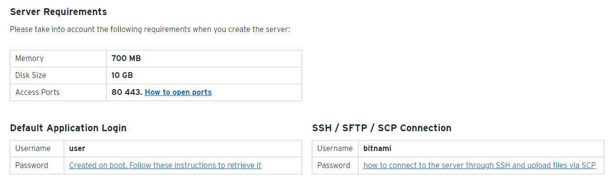
Bitnami WordPress 이미지 OCI에 임포트 하기
OCI 콘솔에 로그인 합니다.
내비게이션 메뉴를 엽니다. [Core Infrastructure] 하위에 [Compute] 하위에 [Custom Images]를 클릭합니다.
임포트할 Compartment를 확인하고 Import Image 클릭
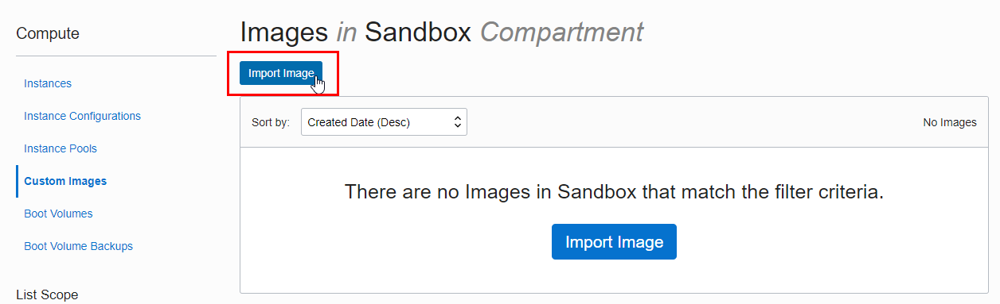임포트 입력정보
- NAME: 이미지 이름 입력
- OPERATING SYSTEM: Linux 선택
- OBJECT STORAGE URL: 앞서 복사한 이미지의 Object Storage URL 복사
- IMAGE TYPE: oci 선택, 이미지 URL 끝 부분을 보면 확장자가 .oci임을 알 수 있습니다.
- LAUNCH MODE: oci 타입은 자동으로 NATIVE MODE로 선택됩니다.
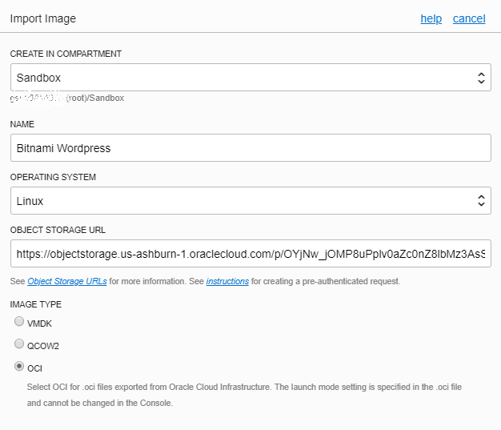
정보 입력 후 아래쪽의 Import Image 클릭
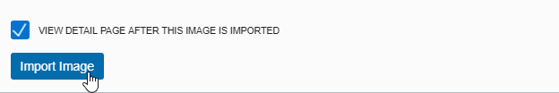Custom Image를 임포팅 중입니다.
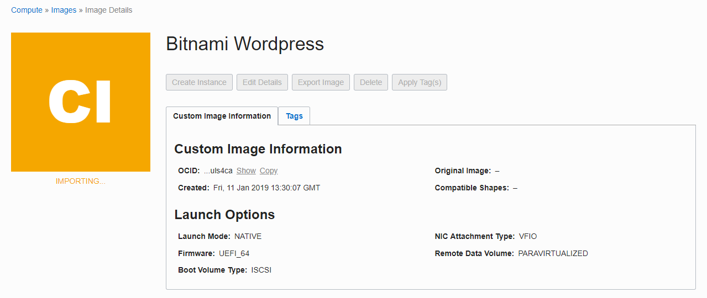이미지 크기(10 GB)로 인해 시간이 좀 걸립니다. 작성일 기준 15분 정도 걸렸습니다.
Bitnami WordPress 이미지로 Compute 인스턴스 만들기
임포팅이 완료되었습니다.
기존과 같이 Instance 생성시 Image Source에서 Custom Image를 선택할 수 있습니다.
여기서는 이미지에서 바로 인스턴스를 생성해 보겠습니다. 생성하기 전에 호환되는 Shape를 확인하고 Create Instance를 클릭합니다.
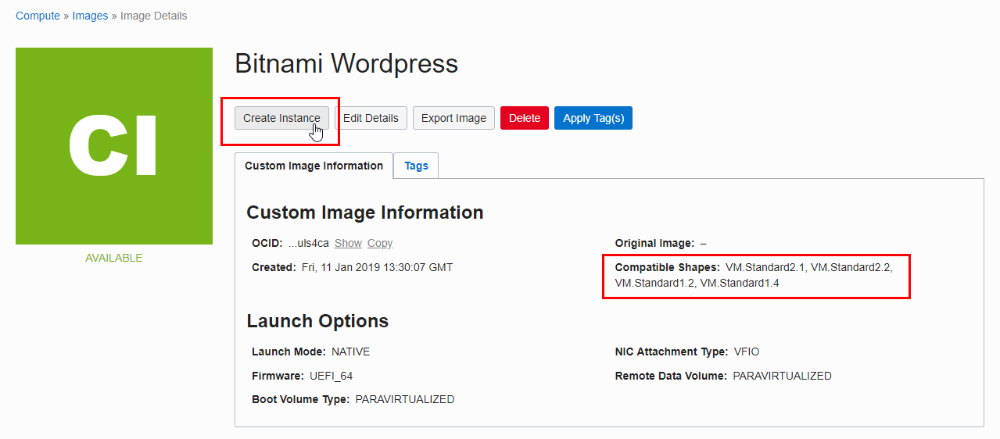인스턴스 생성
호환되는 Shape에 따라 Virtual Machine 타입을 선택합니다. 인스턴스 이름 이외 다른 항목은 필요한 정보를 입력하고 아래쪽 Create 클릭
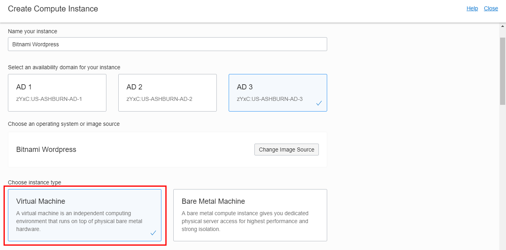생성이 완료되면 인스턴스를 클릭하여 상세 화면으로 이동합니다.
인스턴스 상세 정보에서 Public IP를 확인합니다.
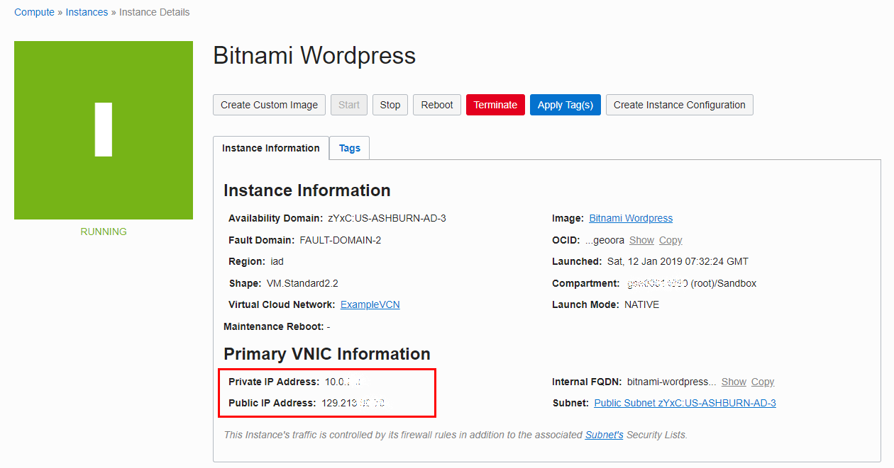확인한 IP를 웹브라우저를 통해 접속해 봅니다.
Security Lists에서 80 포트를 개방하지 않은 경우, 반드시 개방하도록 합니다.
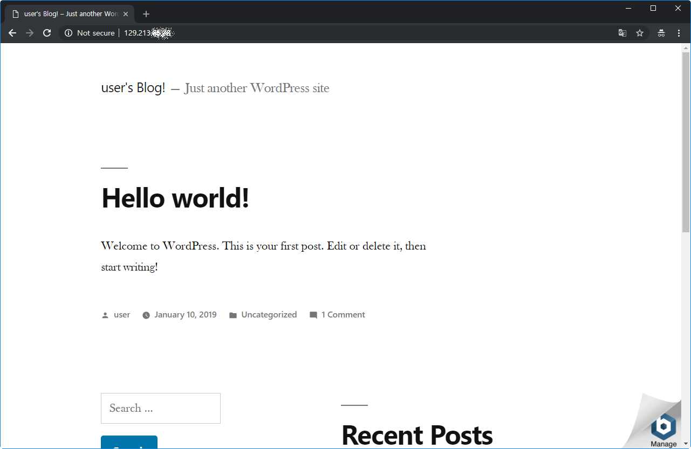
WordPress 암호 확인
앞서 확인한 Public IP로 SSH로 접속합니다.
로그에서 암호 확인
sudo cat /opt/bitnami/var/log/pre-start.log
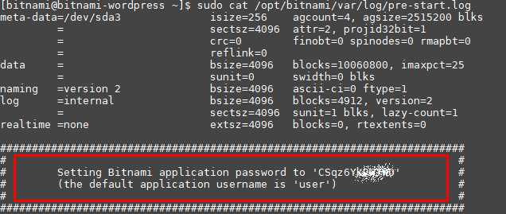
실행 예
oracle@ubuntu:~$ ssh -i privateKey opc@129.213.86.XX
The authenticity of host '129.213.86.XX (129.213.86.XX)' can't be established.
ECDSA key fingerprint is SHA256:OQuL9olzWPoJUgG+jUFs7GWC1xVLz8W42/yWN+/Z1ww.
Are you sure you want to continue connecting (yes/no)? yes
Warning: Permanently added '129.213.86.XX' (ECDSA) to the list of known hosts.
Last login: Sat Jan 12 07:49:55 2019 from 223.33.164.XX
___ _ _ _
| _ |_) |_ _ _ __ _ _ __ (_)
| _ \ | _| ' \/ _` | ' \| |
|___/_|\__|_|_|\__,_|_|_|_|_|
*** Welcome to the Bitnami WordPress 5.0.3-0 ***
*** Documentation: https://docs.bitnami.com/oci/apps/wordpress/ ***
*** https://docs.bitnami.com/oci/ ***
*** Bitnami Forums: https://community.bitnami.com/ ***
[bitnami@bitnami-wordpress ~]$ sudo cat /opt/bitnami/var/log/pre-start.log
meta-data=/dev/sda3 isize=256 agcount=4, agsize=2515200 blks
= sectsz=4096 attr=2, projid32bit=1
= crc=0 finobt=0 spinodes=0 rmapbt=0
= reflink=0
data = bsize=4096 blocks=10060800, imaxpct=25
= sunit=0 swidth=0 blks
naming =version 2 bsize=4096 ascii-ci=0 ftype=1
log =internal bsize=4096 blocks=4912, version=2
= sectsz=4096 sunit=1 blks, lazy-count=1
realtime =none extsz=4096 blocks=0, rtextents=0
#########################################################################
# #
# Setting Bitnami application password to 'CSqz6YkXXXXX' #
# (the default application username is 'user') #
# #
#########################################################################
[Sat Jan 12 07:34:07 UTC 2019] Regenerating keys for wordpress
[Sat Jan 12 07:34:13 UTC 2019] Regenerating keys for wordpress finished
[Sat Jan 12 07:34:13 UTC 2019] Regenerating keys for apache2
[Sat Jan 12 07:34:21 UTC 2019] Regenerating keys for apache2 finished
[Sat Jan 12 07:34:21 UTC 2019] Finished regenerating keys
[Sat Jan 12 07:34:21 UTC 2019] Setting up password for apache2 service
[Sat Jan 12 07:34:25 UTC 2019] Setting up password for apache2 service finished
[Sat Jan 12 07:34:25 UTC 2019] Setting up password for mysql service
[Sat Jan 12 07:34:44 UTC 2019] Setting up password for mysql service finished
[Sat Jan 12 07:34:44 UTC 2019] Setting up password for wordpress application
[Sat Jan 12 07:34:49 UTC 2019] Setting up password for wordpress application finished
[Sat Jan 12 07:34:49 UTC 2019] Finished setting password
[bitnami@bitnami-wordpress ~]$WordPress 접속하기
다음 URL을 통해 관리 페이지로 이동합니다
http://{SERVER-PublicIP}/wp-admin확인한 관리자(user) 패스워드로 로그인합니다.
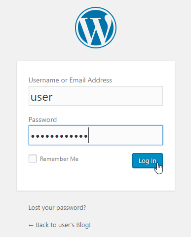로그인하면 Wordpress 대쉬보드가 그림처럼 보이게 됩니다.
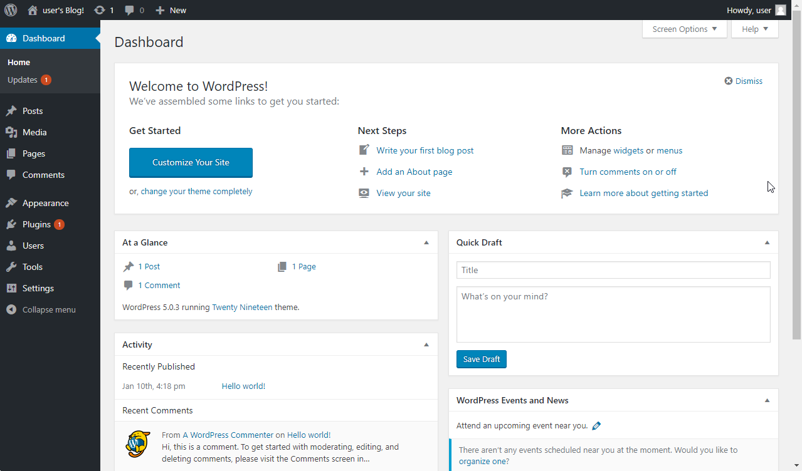이제 설치된 Wordpress를 설정하여 사용하면 됩니다.
** 이 글은 개인으로서, 개인의 시간을 할애하여 작성된 글입니다. 글의 내용에 오류가 있을 수 있으며, 글 속의 의견은 개인적인 의견입니다. **